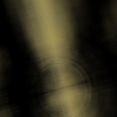
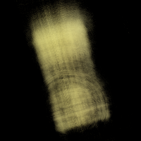
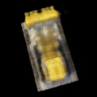
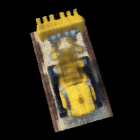
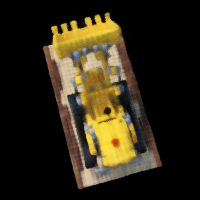

Overview
In this assignment, we will explore Neural Radiance Fields, where we can train a network to render 3D scenes given a dataset of 2D images!
Part 1: Fit a Neural Field to a 2D Image!
Part 1.1: Network
First, since there is no concept of radiance in 2D, the Neural Radiance Field falls back to just a Neural Field:
in 2D, in which {u, v} is the pixel coordinate. In this section, we will create a neural field that can represent a 2D
image and optimize that neural field to fit this image.
Our initial network will follow the diagram below:
 Neural Field MLP
Neural Field MLP
|
This means that our Pytorch implementation will follow this:
\[
Linear (256) \rightarrow ReLU \rightarrow Linear (256) \rightarrow ReLU \rightarrow Linear (256) \rightarrow ReLU \rightarrow Linear (3) \rightarrow Sigmoid
\]
However, we wil have to apply positional encoding to the input of our model according to the following equation:
So for the pixel coordinates x in our input, given a range L, we will loop through L and calculate each frequency term
and concatenate each term using Pytorch. We will then use this encoded input in our forward process of the network.
Part 1.2: Dataloader
In case of large images, we will take batches of the image instead processing the entire thing, so we will make a custom dataloader. We
will read the image and normalize the colors by dividing by 255. Then, given N pixels, we will sample random pixel indices then
normalize these indices by the dividing by the width and height of the image, which will give us our N x 2 2D coordinates. To get
the color values, we will use our sample indices and access the image at those locations to get the pixel values.
Part 1.3: Loss Function, Optimizer, and Metric
You will use mean squared error loss (MSE) between the predicted color and the groundtruth color. We will use an Adam optimizer with a learning rate
of 1e-2. Using the MSE, we will calculate the Peak signal-to-noise ration (PSNR) to measure quality of the image, so higher is better.
Part 1.4: Hyperparameter Tuning
The first variation is learning rate, where I changed the rate to 1e-10. I found that this negatively impacted performance, where I just
got gray images for all of the training steps. The next variation is layer count, where I added more Linear and ReLU layers. This did not
seem to have much change to the overall performance of the network.
For the results below we used the hyperparameters:
Learning Rate = 1e-2
L = 10
4 Linear Layers, 3 ReLU layers, 1 Sigmoid Layer
For the results below we used the hyperparameters:
Learning Rate = 1e-2
L = 10
8 Linear Layers, 7 ReLU layers, 1 Sigmoid Layer
For the results below we used the hyperparameters:
Learning Rate = 1e-10
L = 10
4 Linear Layers, 3 ReLU layers, 1 Sigmoid Layer
For the results below we used the hyperparameters:
Learning Rate = 1e-2
L = 10
4 Linear Layers, 3 ReLU layers, 1 Sigmoid Layer
Part 2: Fit a Neural Radiance Field from Multi-view Images
Part 2.1: Create Rays from Cameras
Part 2.1.1: Camera to World Coordinate Conversion
We have:
where,
is the world space and
is the camera space.
is the world-to-camera (w2c) transformation matrix and its inverse is called the camera-to-world (c2w) transformation matrix.
Given xc and c2w, we can do
matrix-vector multuplication to get xw = xc * c2w.
Part 2.1.2: Pixel to Camera Coordinate Conversion
We have matrix K:
where (fx, fy) is the focal length and
is the principal point.
Given matrix K, s, and 2D location (u, v), we can do matrix-vector multiplication again to get
xc = s * [u, v, 1]T * K-1.
Part 2.1.3: Pixel to Ray
We need to solve:
and
where rd is a directional ray and ro is an origin ray. To find ro, we can
use camera-to-world to transform the origin (zero matrix/tensor). To find rd, we can find the origin ray like
previously described and find xw with xw = xc * c2w and divide the difference by the
difference magnitude.
Part 2.2: Sampling
Part 2.2.1: Sampling Rays from Images
In Part 1, we have done random sampling on a single image to get the pixel color and pixel coordinates. Here we can build on top
of that, and with the camera intrinsics and extrinsics. After reading the image, we create a UV pixel grid using the width
and height of the image while adding 0.5 to account for the image offset. We then pick N rays to globally sample. For
each Ni, we can take matrix Ki, UV pixel grid, c2w matrix, to compute the origin
and directional rays using the defintions described above.
Part 2.2.2: Sampling Points along Rays
Now that we have the rays, we can discritize each ray into 3D space. We first uniformly create some samples along the ray
(t = np.linspace(near, far, n_samples)). We will use near=2.0 and far=6.0. To get the 3D coordinates, we can
find
however to prevent potential overfitting, we will add perturbation with t = t + (np.random.rand(t.shape) * t_width) to the
points during training.
Part 2.3: Putting the Dataloading All Together
Using all the definitions described above, we can create a custom dataloader for rays similar to Part 1. We can sample random origin
and directional rays for the image and sample the points along these rays. Here is a visualization.
Part 2.4: Neural Radiance Field
Part 2.4.1: Network
Our NeRF architecture will be a modification of our Neural Field model, most notably:
1 - input is now 3D world coordinates instead of 2D pixel coordinates
2 - the MLP is deeper
3 - we inject the input (after PE) to the middle of your MLP through concatenation
Our architecture will look similar to this:
 Neural Radiance Field MLP
Neural Radiance Field MLP
|
Our positional encoding for the input will be similar to Part 1. The first half of the MLP will just be a series
of Linear and ReLU layers. In the second half, we will also have a series of Linear and ReLU layers but we will concatenate
the encoded coordinates. Then the model branches to predict a color value and a density value. For the density layer, we will have a
Linear layer with an output dimension of 1 going into a ReLU layer. For the color layer, we will have a series of Linear and ReLU
layers going into a sigmoid layer. So in the forward process, we get the output of the first half of the MLP, concatenate the
encoded coordinates, pass that into the second half of the MLP, use that output to get the density prediction, then concatenate the
encoded directional rays and pass that into the color layer to get the RBG prediction.
Part 2.5: Volume Rendering
We have the equation:
Using the densities we got from the model, we can calculate a probability
which is the probability (p_terminate)of terminating at sample location i. With this probability we can get the transmittance T
using torch.cumprod. Using the probability p_terminate, transmittance T, and the color values, we can solve for
color * p_terminate * T.
|
1 Step Render
|

50 Step Render
|

100 Step Render
|
|

500 Step Render
|

1000 Step Render
|

2000 Step Render
|